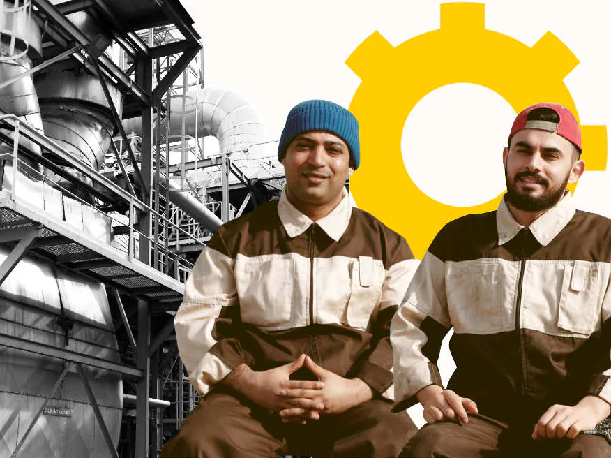
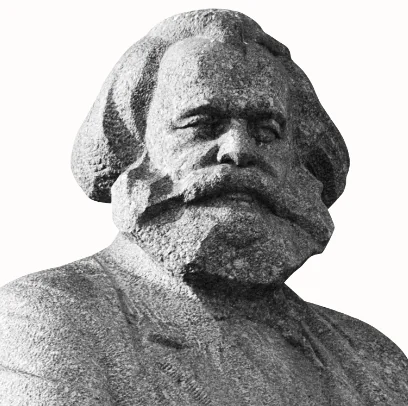

Os eixos de nossos princípios
1. A disciplina de partido Com disciplina de partido não estamos falando de obediência cega, mas da condição necessária para transformar nossas convicções em força histórica organizada. Um partido com verdadeiro potencial revolucionário não é a mera soma de indivíduos que compartilhem determinadas ideias: deve constituir-se como uma organização consciente, coesa e capaz de agir como uma vontade política comum. Sem disciplina, a organização se dissolve no individualismo; sem organização, as ideias ficam reduzidas a meras opiniões incapazes de transformar a realidade. A disciplina significa, portanto, subordinar as ambições e preferências particulares às decisões coletivamente adotadas, uma vez esgotada a deliberação interna. Não significa renunciar à crítica nem ao debate: significa compreender que a discussão tem seu lugar dentro da organização e que, uma vez estabelecida uma orientação comum, todos devem contribuir para levá-la adiante. Deste modo, a liberdade de discussão e a unidade de ação não se excluem, mas fazem parte de uma mesma estrutura organizativa. Não se pode transformar uma nação mediante vontades isoladas, apenas mediante homens e mulheres capazes de antepor os interesses comuns às suas ambições particulares, “unidos pela associação e guiados pelo saber”, com uma estratégia definida coletivamente, sustentada pela constância, o trabalho e o compromisso sério. A disciplina é o que permite que um conjunto de pessoas se converta em uma força política organizada. Se cada militante age segundo sua vontade particular, a força coletiva se fragmenta; mas se existe disciplina consciente, cada esforço individual se integra em uma estratégia comum. Só assim a soma de vontades se converte em organização; e a organização converte as ideias em poder real.
2. A unidade na ação A unidade na ação é a consequência prática dessa disciplina: não basta pensar juntos nem compartilhar um programa; é necessário agir juntos em função de objetivos políticos concretos. Um partido que não seja capaz de intervir organizadamente na realidade está condenado a permanecer como mero espectador dos acontecimentos, por mais corretas que possam ser suas ideias. A unidade na ação significa que, dentro da organização discutimos, mas fora dela agimos como um só. Assim, uma vez definida coletivamente uma orientação política, a organização inteira concentra suas forças em levá-la à prática. Cada militante, cada órgão e cada estrutura deixa de agir como uma vontade independente e passa a fazer parte de uma ação coordenada. Só assim, uma multiplicidade de esforços dispersos pode se converter em uma força capaz de produzir efeitos reais. A dispersão produz impotência, a coesão produz poder; onde cada qual age por conta própria, o adversário impõe seu rumo. A unidade na ação permite acumular forças, sustentar campanhas, intervir nos conflitos concretos, ganhar influência e converter a organização em um ator político efetivo. Mas essa unidade não consiste em uniformidade; nossa filosofia é pluralista, pelo que uma direção política comum, objetivos definidos e capacidade organizativa para executá-los não negam a pluralidade interna, mas a articulam e a convertem em força. A diversidade de opiniões pode existir dentro da organização; o que não pode existir é uma diversidade permanente de vontades contraditórias quando se pretende alcançar um objetivo comum. Não pretendemos anular a personalidade particular de cada membro, porque isso é impossível; mas um partido que decide coletivamente, se começa a agir de maneira fragmentária, carece, em última instância, de capacidade política real. Por isso, disciplina e unidade na ação são duas dimensões inseparáveis, mas não idênticas. A disciplina garante a coesão da organização; a unidade na ação transforma essa coesão em intervenção política. A primeira organiza as vontades; a segunda as põe em prática. Só um partido disciplinado, organizado e consciente de seus objetivos, capaz de deliberar coletivamente e agir de maneira unificada, pode deixar de ser mero objeto espectador da história para se converter em sujeito capaz de disputar e construir o poder real que determine efetivamente o rumo e o destino de nossa nação.

Platão: Inicia o primeiro sistema filosófico, ao distinguir um falso filósofo ou sofista de um verdadeiro filósofo, estabelecendo a ontologia das Ideias e o princípio de Symploké, segundo o qual a realidade não é um monismo onde tudo se conecta nem um atomismo onde tudo está absolutamente inconexo.
Aristóteles: Terrenaliza a filosofia mediante as categorias, define o ser humano como um animal político cuja racionalidade depende do marco da sociedade política e aporta uma clareza lógica pré-científica.
Tomás de Aquino: Aplica a racionalidade aristotélica à luz de uma moralidade cristã. Formula as bases de uma teoria objetiva do valor ou do preço justo, subordinada ao bem comum, e demonstra a compatibilidade da razão com a ordem material do cosmos.
Francisco Suárez: Sistematiza a metafísica e separa a filosofia como tratado autônomo da teologia. Junto a seus contemporâneos jesuítas e à Escola de Salamanca, fundamenta que a soberania reside no povo e justifica o direito à insubordinação frente à tirania.
Spinoza: Desfere um golpe no criacionismo teológico mediante a ideia de uma única substância material e infinita e a ordenação geométrica das ideias.
Hegel: Introduz a ontologia da dialética, o desenvolvimento histórico do Espírito Objetivo e a noção de transformação e movimento por contradição em devir.
Marx: Dá a «reviravolta» à dialética hegeliana, descobrindo que o motor da história é a dialética de classes e fundando uma nova ontologia sobre a ideia de produção.
Gustavo Bueno: Tenta dar a «reviravolta» a Marx para purgá-lo de vestígios idealistas, desenvolvendo o materialismo filosófico mediante a teoria do fechamento categorial, o pluralismo ontológico descontinuista e a ideia do Ego Transcendental.
E o Materialismo Político (Polimat) consuma a síntese ou «fusão nuclear» do materialismo histórico marxista, do materialismo filosófico buenista e da tradição filosófica hispânico-católica para construir um sistema filosófico orientado a transformar revolucionariamente a realidade desde a Iberofonia. Desde a escola do Materialismo Político nos reconhecemos como herdeiros legítimos da racionalidade católica —embora não os únicos— e de uma tradição de pensamento que, sem negar outras fontes, pode situar-se em uma linha genealógica que se estende desde os gregos clássicos até a atualidade, transitando principalmente pelos já mencionados Platão, Aristóteles, Tomás de Aquino, Francisco Suárez, Spinoza, Hegel, Marx e Bueno, entre muitos outros autores e pensadores antigos e contemporâneos. Consideramo-nos na vanguarda desse linhagem. Não renegamos nossa história, mas reivindicamos este legado que herdamos e o estudamos em profundidade, junto com sua história, seus aportes e suas categorias fundamentais, para depois assimilá-los, aplicá-los, desenvolvê-los e entretecê-los dialeticamente com o mais avançado e racional das ciências e das humanidades atuais. Não pretendemos «modernizar» a escolástica nem construir um tomismo de esquerda; simplesmente reconhecemos que nossa própria tradição de pensamento hispano-católica contém elementos potentemente racionais, sistemáticos, políticos e realista-materialistas que podem e devem integrar-se em uma concepção filosófica colombiana e ibérofona do presente. Se você quer aprofundar mais em nosso Materialismo Político, recomendamos as seguintes leituras:
4. A implantação política da filosofia: A implantação política de nossa doutrina deve ser desde o poder do Estado, em todas as suas camadas e ramos, para que adquira um caráter secular e transcendental, que acabe com a hegemonia do liberalismo produto do idealismo de raiz protestante, kantiana e burguesa. Opo-nos ao idealismo, ao gnosticismo, ao pós-modernismo, ao irracionalismo, ao espiritualismo e ao deísmo em qualquer de suas vertentes. Somos ateus católicos, sendo ateu o substantivo e católico o adjetivo. Reivindicamos o contexto cultural católico no qual nos desenvolvemos e sem o qual não podem ser entendidas nem a Colômbia nem a Iberofonia. Nosso materialismo político é solidário ao socialismo, pois somente desenvolvendo um modelo socialista de sociedade nossa doutrina pode se implantar. Entendemos nosso socialismo como um período de transição entre capitalismo e comunismo. Não somos anticapitalistas, mas pós-capitalistas. Não queremos destruir o capital, mas colocá-lo a serviço da classe trabalhadora colombiana até superá-lo dialeticamente.
A implantação política de nossa doutrina deve ser desde o poder do Estado, em todas as suas camadas e ramos, para que adquira um caráter secular e transcendental, que acabe com a hegemonia do idealismo kantiano capitalista burguês.
Nos opomos ao idealismo, ao gnosticismo, ao pós-modernismo, ao irracionalismo, ao espiritualismo e ao deísmo em qualquer de suas vertentes. Somos ateus católicos, sendo ateu o substantivo e católico o adjetivo. Reivindicamos o contexto cultural católico em que nos desenvolvemos e sem o qual não se podem entender nem a Iberofonia nem a Espanha.
Nosso materialismo político é solidário do socialismo, pois somente desenvolvendo um modelo socialista de sociedade nossa doutrina pode ser implantada. Entendemos nosso socialismo como um período de transição entre capitalismo e comunismo. Não somos anticapitalistas, mas pós-capitalistas.
Pontos programáticos
Remodelação dos Poderes do Estado
Instauração de um regime político constitucional inspirado no materialismo político. Divisão de poderes em dezoito, nove descendentes (administrativos) e nove ascendentes (populares). Os nove poderes descendentes se conformarão seguindo a estrutura proposta por Gustavo Bueno em seu Primeiro ensaio sobre as categorias das "ciências políticas": Poderes da Camada Conjuntiva: Poder Executivo (que terá prioridade sobre o restante), Poder Legislativo e Poder Judiciário; Poderes da Camada Basal: Poder Gestor, Poder Planejador (que terá prioridade) e Poder Redistributivo; e Poderes da Camada Cortical: Poder Militar, Poder Federativo e Poder Diplomático. Os poderes ascendentes populares servirão para controlar as ações dos poderes descendentes e cooperar para a estabilidade e recorrência dos planos e programas estatais. A reorganização da administração pública primeiro colombiana e depois grã-colombiana, evitando que nela se encontrem conspiradores contra nossa pátria. Em matéria militar, aumento do orçamento das Forças Armadas, reorientação ideológica das FFAA atualmente anglofilas e aburguesadas por uma doutrina realmente nacionalista e operária, e conexão de nossa indústria militar com o máximo desenvolvimento tecnocientífico e industrial possível. Eliminação de setores anglofilos, otanistas, europeístas e subordinantes do Exército a interesses estrangeiros ou burgueses.
Medidas contra o Separatismo e contra a subordinação cultural
Ilegalização de toda formação política separatista, regionalista e que defenda a autodeterminação de regiões espanholas. Intolerância total com qualquer defensor da ruptura da Caixa Única da Seguridade Social, do fundo das pensões e da unidade do patrimônio histórico que, durante gerações, construiu a Nação Política com o esforço e sacrifício da classe operária espanhola. Fechamento fulminante de toda instituição subvencionada pelo Estado que trabalhe em prol de fins que fomentem a desigualdade entre os cidadãos espanhóis e que suponham desperdício fiscal e penetração de ideias contrárias à nossa soberania e aos interesses da classe operária. Incluem-se aqui organizações fraudulentas feministas, queer, islamistas, separatistas, partidários (encobertos ou explícitos) da ideologia do "livre-comércio", europeístas e da negra-lenda. Expulsão e proibição na Espanha de toda organização próxima à Open Society Foundation de George Soros, à Fundação Friedrich Ebert e à Fundação Bertelsmann. Os fundos antes destinados a subvencionar essas fundações e ONGs serão derivados ao orçamento do Ministério dos Assuntos Sociais, cuja orientação será socialista. Revisão em alta das pensões mais baixas em função do patrimônio.
Estado laico radical e questão religiosa
Em matéria religiosa, apostamos por um Estado laico radical. Respeitamos o credo, ou a ausência de credo, de cada um dos cidadãos da Espanha, e protegemos sua liberdade de culto. Ao fomentar o materialismo político, definimo-nos em matéria religiosa como ateus católicos. Negamos a essência e a existência de Deus, mas reconhecemo-nos produto de tradições e costumes comunitários de claro signo cultural católico. Pelo que a cultura católica (suas tradições e costumes), majoritária nos espanhóis, será especialmente protegida. Será o Estado quem decida sobre os altos cargos da hierarquia eclesiástica e da Conferência Episcopal, e além disso promoverá a centralização das associações das comunidades religiosas locais em uma única associação a nível nacional por cada confissão religiosa, cujos dirigentes serão designados pelo Estado através de um processo de seleção com os seguintes requisitos: ter nacionalidade espanhola, falar espanhol, ter residido ininterruptamente na Espanha por mais de 30 anos ou ser de 3ª geração, e não ter sido condenado por qualquer delito, nem estar relacionado com nenhum grupo ou organização fundamentalista. As demais religiões poderão ser exercidas livremente na Espanha, mas será proibido todo símbolo religioso no vestuário em edifícios públicos, particularmente em centros educativos para menores de idade, contrários aos planos e programas do Estado, particularmente a Shayla, o Hiyab, o Al-Amira, o Chador, o Niqab e o Burca nas mulheres; nos casos do Niqab e do Burca, seu uso ficará terminantemente proibido em qualquer âmbito. Fechamento de toda mesquita islamista, salafista e/ou wahabita. Não será permitido o uso de locais privados, seja de aluguel ou em propriedade, como lugares de culto ou para a realização de ritos ou seminários religiosos, ou como escolas de ensino de religião. Ditas atividades serão realizadas nos templos já existentes. A manutenção dos templos ou lugares de culto legalmente estabelecidos será financiada pelos fiéis das distintas comunidades religiosas através das associações autorizadas pelo Estado, o qual supervisionará os gastos de ditos fundos, proibindo além disso o financiamento que provenha de fundos estrangeiros, venham de Estados, associações privadas ou doações particulares. Ilegalização de toda associação e organização que defenda qualquer forma de fundamentalismo islâmico e a aplicação da Xaria, por serem contrárias à liberdade de culto, assim como a proibição de que estrangeiros instruídos em seus países de origem oficiem cultos religiosos na Espanha. Será retirada a condição de notório enraizamento a todas as confissões que não tenham acordos com o Estado ou que tenham menos de um milhão de fiéis. Ditas confissões seriam: Budismo, Testemunhas de Jeová e Igreja de Jesus Cristo dos Santos dos Últimos Dias. Será fomentada nas escolas uma educação materialista compatível com disciplinas de História e análise das Religiões e História e análise da Religião Católica. Fomentaremos o racionalismo materialista e a lógica nas escolas, na discussão pública e nos meios de comunicação. Proibição de inscrições de qualquer novo culto religioso ou seita e do proselitismo religioso porta a porta, assim como os ritos e costumes que sejam contrários à legislação e coloquem em perigo tanto a integridade.
Socialismo, Reindustrialização e Controle Operário do Planejamento Científico da Economia
Nacionalização e socialização progressiva dos setores estratégicos da economia nacional, especialmente Banca e Indústria. Intervenção e planejamento, através de cooperativas, na Agricultura, Pecuária e Pesca. Reorganização das relações de produção, sob controle operário e do Estado, a nível provincial para reindustrializar a Espanha, recuperar trabalhadores emigrados, tanto qualificados como não qualificados, e repovoar a Espanha vazia. Impulso e modernização da rede ferroviária mediante o relançamento da produção nacional do setor. Recuperaremos a elaboração e ministração de cursos para empregados e desempregados através do Instituto Nacional de Emprego, com exames e titulações oficiais. Fomentaremos o empreendedorismo socialista, a iniciativa econômica privada sempre que o excedente de produção das empresas (a mais-valia) esteja sob controle operário. Supressão das cotas aos trabalhadores autônomos sempre que não tenham empregados a seu cargo. Perseguição da fraude fiscal e do "trabalho informal". Apoiaremos e assinaremos as associações federativo-comerciais bilaterais e de qualquer tipo que convenham aos nossos interesses geoestratégicos, fomentando a paz, a concórdia e as boas relações com todos os Estados do Planeta. Insubordinação fundante contra a ideologia do "livre-comércio", planejamento pluralista (centralizado e descentralizado segundo cada âmbito) dos meios e relações de produção, aplicando as últimas tecnologias informáticas para o processamento e conhecimento de informação econômica (preços, custos, valores de uso em alfândegas, etc.), sem prescindir da geopolítica e da importância da soberania estatal para desenvolver dito planejamento. Estes elementos, junto com a construção doutrinal do materialismo político, nos permitirão construir um Socialismo com Características Hispânicas.
Política Externa e paniberismo
Promoção da Iberofonia como espaço geopolítico, geoeconômico e geocultural. A Espanha não pode liderar a Iberofonia, por motivos geográficos, demográficos e estratégicos. Mas sim pode ajudar, de maneira exemplarista, em sua construção. Promoção da fusão da Secretaria-Geral Ibero-Americana (SEGIB) com a Comunidade de Países de Língua Portuguesa; apoio desde esta fusão ao MERCOSUR, UNASUR, ALADI e CELAC, junto com outras organizações de integração do âmbito ibérofono. Reconstrução das Cúpulas Ibero-Americanas como Cúpulas Ibérofonas anuais, onde prevaleça o trato igual entre nações, o respeito mútuo, a defesa da soberania nacional e da integridade territorial em e entre todas elas e o estreitamento de laços de todo tipo. Potencialização da rede do Instituto Cervantes em escala global, e do espanhol como Idioma Universal, particularmente nos Estados Unidos da América do Norte, na China e nos países da Nova Rota da Seda. Revisão de nossas relações diplomáticas com o Marrocos. Pacto de amizade com a Argélia e o norte da África, assim como com as nações do Levante oriental e Oriente Médio. No marco da Iberofonia, estabelecer um pacto conjunto de apoio mútuo em matéria de política externa de soberania entre a Espanha, a República Árabe Saaraui Democrática, a Argentina, Porto Rico, a Venezuela, a Guatemala e Cuba pela recuperação de Gibraltar, das Malvinas, do Essequibo, do Belize Guatemalteco e de Guantánamo e pela soberania da República Saaraui Democrática e de Porto Rico. Converter a Espanha, também, em membro observador da União Africana, pois temos territórios soberanos no Continente Africano, além de vínculos históricos.
Política Penal
Cumprimento integral das penas, reduzindo as mesmas somente em delitos leves. Prisão perpétua para os delitos mais graves (pedofilia, terrorismo, assassinato, secessão e sedição, estupro, roubo e malversação dos cofres públicos, contraespionagem, venda ou informação de segredos de Estado a terceiras potências). Compromisso férreo com a segurança cidadã mediante o reforço de efetivos policiais e uma política educativa focada na convivência responsável e respeitosa. Endurecimento da proibição e perseguição do proxenetismo, da gestação de substituição e da eugenia encoberta como eutanásia. Revogação da Lei Integral de Violência de Gênero por supor um menosprezo da igualdade perante a Lei de todos os espanhóis, ao estabelecer uma diferença de penas pelo mesmo delito que condena, com base no sexo, mais os homens do que as mulheres. Elaboração de uma Lei Integral contra a Violência Intrafamiliar que cubra e proteja as mulheres maltratadas por homens, os homens maltratados por mulheres e as pessoas que sofram violência dentro de casais homossexuais. Esta lei também protegerá as crianças e os idosos contra a violência e o abuso. Reformulação da mal chamada Lei Trans, proibição da hormonização e das operações de "mudança de sexo" em menores de idade. Ilegalização de toda associação que promova a ideologia queer e reforma dos programas escolares para erradicar a ideologia de gênero nas escolas. No que se refere à delinquência comum, aplicaremos o cumprimento integral das penas nos delitos mais graves (crimes horrendos) e trabalhos comunitários no regime penitenciário. Promoção de campanhas públicas contra o vício em pornografia e contra a hipersexualização capitalista.
Medidas contra o racismo, a xenofobia e a homofobia
Ilegalização de toda organização política que promova o racismo, a xenofobia e a discriminação por razão de etnia, religião, sexo, orientação sexual ou origem nacional ou internacional.
Saúde, Educação e Igualdade de Oportunidades para a Função Pública
Centralização das competências em educação e saúde. Cartão único da Seguridade Social para toda a Espanha, compartilhamento dos prontuários sanitários de todos os espanhóis em todos os centros sanitários da Nação. Ampliação das patologias de saúde dental cobertas pela Seguridade Social. Melhora na contratação de pessoal sanitário e na gestão dos prazos de atenção médica. Ampliação do quadro de pessoal nas especialidades com listas de espera mais longas na Seguridade Social. Produção e distribuição, através do sistema sanitário do Estado, de óculos. Sistema e programa educativo único em todas as disciplinas e em todos os cursos, mediante Lei Orgânica. Modernização da Formação Profissional espanhola para adequá-la às necessidades do mercado de trabalho atual. Docência de Formação e Orientação Trabalhista em todos os ramos do sistema educativo. Defesa da Educação Pública de qualidade, aumento do orçamento estatal destinado ao seu desenvolvimento, apoiando mediante bolsas e ajudas os estudantes com maiores necessidades econômicas e que mais se esforcem nos estudos obtendo melhores notas. Reforço institucional da figura do professor e de sua autoridade na sala de aula. Obrigatoriedade de uniforme escolar em todas as etapas formativas, salvo a Universitária, para igualar os alunos entre si. Estabelecimento de um sistema ibérofono de intercâmbio de estudantes maiores de 18 anos. Fim da desigualdade nos concursos para funcionalismo: única convocatória a nível nacional e sem contar a língua regional como mérito para conseguir a vaga.